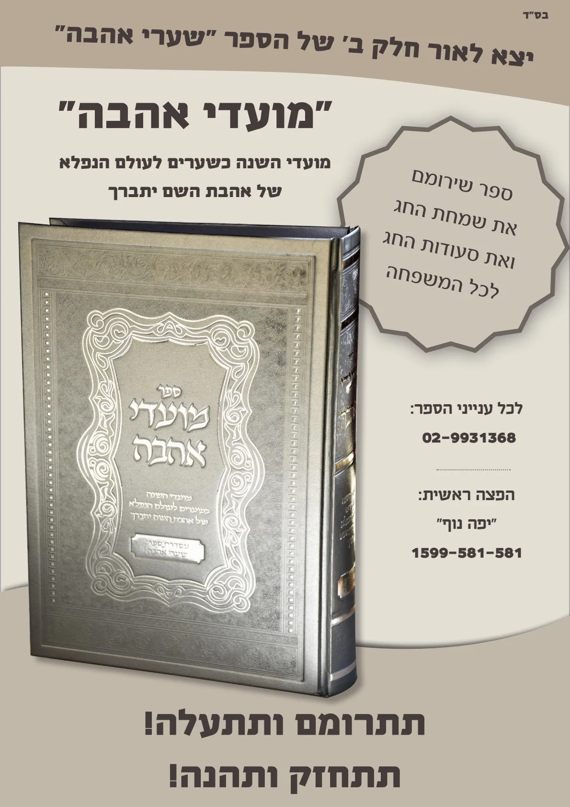

הספר שערי אהבה הוא - מדריך מעשי לבן דורנו לזכות לאהבת ה'.
סיפורו של הספר - שערי אהבה
קבוצת יהודים בני תורה שזכו להתקרב לתורה רק בגיל מבוגר, שאפו ללמוד בכולל כדי להתעלות בתורה. הם חיפשו תלמיד חכם שימסור להם שיעורי תורה וינהל כולל בשבילם.
בשכונתם היה אברך שנרתם לבקשתם ומסר להם שיעורים בגמרא, הלכה ומוסר. במסגרת שיעור יומי עברו על ספרי המוסר הבסיסיים: 'דרך ה'', 'מסילת ישרים', 'חובות הלבבות' ועוד.
כיון שמדובר באנשים שנחשפו לרעיונות אלו בגיל מבוגר, כל דבר שלמדו נתחו בצורה מעמיקה ורצו לדעת כיצד ניתן לקיימו הלכה למעשה.
כאשר חיפשו דרכים לקנות את המעלות והמדות המובאות בספרים אלו, שם לב ראש הכולל, שתמיד לכל מעלה טובה: ענווה ושמחה, תפילה וקדושה, שבת ומועדים, המפתח לכל עליית האדם בעבודת ה' הוא מצוה מן התורה שכולנו מזכירים כמה פעמים ביום, אולם לרוב לא מתייחסים אליה כמצוה שמוטל עלינו לעשות השתדלות לקיימה - המצוה היקרה של אהבת ה'.
במשך שיעורים אלו התבהר שיש כאן מצוה חשובה עד מאד, שאינה מיועדת רק לצדיקים מיוחדים, אלא בידי כל אחד לקיימה ולהתעלות על ידה.
עם הזמן התברר שיש כאן דרישה של 'אל תמנע טוב מבעליו', שכן יהודים מחפשים את הדרך להתעלות בעבודת ה', ובמקום לעבוד על הנקודה העיקרית שהיא אהבת ה', עובדים על הרבה דרכים מסביב ואת העיקר שוכחים.
כך, מתוך השיעורים, נוצר הספר הגדול 'שערי אהבה' – ביאור מפורט של הדרך להשיג אהבת ה' בדורנו, הנחיות ברורות הפותחות את השער לכל איש ואשה להשיג את המפתח הגדול של כל המעלות העולות בית א-ל, ולטעום מצוף נועם העונג האמיתי של אהבת השי"ת.
לחץ כאן והורד למחשב שלך את הספר הנפלא שערי אהבה.
את הספר שערי אהבה ניתן להזמין באתר של י. בלוי ספרים
במחיר 40 ש"ח כולל משלוח עד הבית.
ספר נוסף נפלא - ביאור מצוות אהבת ה.pdf.pdf
כתבה על הספר בעיתונות
ברוך ה', אכשר דרא, וכמעט על כל נושא נכתב ספר המקיף את כל פרטי העניין. אולם מורגש היטב חסר בספר שיקיף את אחד מהנושאים החשובים ביותר ביהדות – מצות "אהבת ה'". כפי שכתב חובת הלבבות (שער עשירי), מצוה זו היא תכלית כל התורה והמצוות, ולרוב חשיבותה אנו מצווים להזכירה בבוקר ובערב. וכבר כתב החפץ חיים (משנה ברורה כה,יד) שכמו שהקורא קריאת שמע בלא תפילין כאילו מעיד עדות שקר בעצמו, כך כשאומר "ואהבת את ד' וגו'" בלי שמרגיש אהבת השי"ת, הרי הוא כדובר שקר ח"ו.
מצוה זו, כפי שכתב הגאון הרב מתתיהו סלומון שליט"א בהסכמתו לספר, היא "מצוה העומדת בקרן זוית מוזנחת מרוב בני אדם, מפני גודל המושג והקושי שיש במצוה זו להגיע לפי האמת אל אהבת ה'".
בספר מובא כיוון מעשי נפלא השוה לכל נפש באופן קיום מצוה זו, המבוסס על פירוש הגר"א בשיר השירים שגילה אור גדול בהבנת גדרי האהבה בכל ענפיה. על פי דבריו נפתחה הדרך לקביעת מסלול המתאים לכל אחד לקיום המצוה, להתרומם על ידה ולטעום מצוף נעימותה.
הספר מנחה את האדם, פסיעה אחר פסיעה, להגיע להישגים מעשיים מרשימים באהבת ה'. המסלול מתחיל בהכרת חשיבותה הגדולה של המצוה, ובהבהרת המושג הכללי של "אהבה", ומשם ל"מפתח הגדול" של מצוה זו שמופיע בפירוש הגר"א לשיר השירים, שהוא, כאמור, אור מבהיק המאיר את כל ענפי הסוגיה וחושף דרך סלולה לקיום המעשי של המצוה. בהמשך, מובא בירור של צורת ההודיה הרצויה להשי"ת, שהיא בית השער לפיתוח הקשר הרגשי של האדם עם השי"ת – "בואו שעריו בתודה". מקביל לעניין ההודיה הוא המושג של שירה, שהוא אמצעי בעל ערך רב ששם הקב"ה בעולמנו כדי לעזור לנו להשיג את הרגשות המרוממים ביותר של אהבת ה'. לאחר מכן מובאת מצות "שויתי ה' לנגדי תמיד". היחס הנפוץ למצוה זו הוא שהיא שייכת לצדיקים מיוחדים בלבד, אולם כאשר מבואר בספר, מצוה זו היא מצוה יקרה שגם עליה נאמר "דרכיה דרכי נועם" ובידי כל יהודי לקיימה. קיומה יעזור מאד לרכישת רגשות אהבת ה' אמיתיים ונלהבים.
פרקים אלו, הראשונים של הספר, מאירים את הדרך לרכישת אהבת ה' מתוך ההסתכלות וההתבוננות בחסד ה' ואהבתו הנפלאה לברואיו הניכרים בבריאה. בפרקים הבאים מובא שמלבד אהבה זו יש אופן נוסף של אהבה שאינה פרי ההסתכלות בבריאה, אלא תולדת אהבת הקדושה, שהיא מתכונותיה הבסיסיות והטבעיות של הנשמה. בנוסף לכך, יש סוג שלישי של אהבת ה', שהוא ייעודה האמיתי ומטרתה של המצוה – שהיא קבלת מלכות שמים באהבה, היינו, שיקבל האדם את רצונו ית' באהבה ובשמחה, בין קבלת רצונו במצוות הכתובות בתורה ובין רצונו בכל מצבי החיים שהוא מזמין לו. הספר מסיים בפרק המראה איך מצות תלמוד תורה היא "כנגד כולם" גם ביחס למצוה זו, שכן אהבת התורה ועמל התורה בצורה הנכונה, הם מעל כל האמצעים האחרים ביעילותם להשגת כל האופנים השונים של אהבת ה'. פרק זה מכוון את הקורא לשים לב שאין כאן מסלול הממזער חלילה את חשיבותו של עמל התורה, אלא אדרבא, אהבת תורה אמיתית היא המפתח שבכוחו לפתוח את כל השערים של אהבת ה' לרווחה, והכיוונים המתוארים בספר אף יגבירו וירוממו את אהבת התורה של האדם באופן נעלה ביותר.
בין כל עניין ועניין יש פנינים מתורת חכמי הדורות שהרחיבו על העניינים שנדונו, וגם עובדות מצדיקי הדורות המדגימות איך עובדי ה' אמיתיים קיימו את הדברים למעשה במשך כל הדורות.
בסוף הספר נוסף נספח חשוב "אמירה לבית יעקב", המראה את הדרך שבידי הנשים להשיג אהבת ה' מושלמת, כפי אופיין וטבען המיוחד, על אף שאין להן את האמצעי של מצות תלמוד תורה שיש לאנשים. יש לציין שבספר זה נמצאת הרחבה של כמה מהיסודות המובאים בחוברת "מפתח החיים" שהוציא המחבר לאור בעבר, שהתקבל באהדה רבה אצל נשות ישראל שנעזרו בו להתמודד עם אתגריהן המיוחדים.
בהסכמתו לספר, כתב הגאון הרב אליהו פאלק שליט"א מח"ס שו"ת "מחזה אליהו" מו"ץ בק"ק גייטסהעד: "הספר מלא על גדותיו עם אהבת ה' ומסביר בטוב טעם ודעת את האמצעים הנמצאים בבריאה המזומנים לעזור לנו לבא לידי מדה גדולה זו לאהוב את ה' בכל לבבנו ובכל נפשנו. דהיינו לא רק לקבל ברצון כל מה שקורה בחיינו בידענו שמאתו לא תצא הרעות ח"ו, אלא לראות בכל עניני החיים איך שהשי"ת אוהב אותנו אהבה בלי מצרים, ועל ידי זה לאהוב גם אותו וכמים הפנים לפנים להדבק עם המטיב עמנו יתברך שמו בכל עת ובכל שעה."
ממשיך הרב פאלק: "תקותנו חזקה שספר קדוש זה ימצא מסילות ללבות בני תורה די בכל אתר ואתר, וירומם אותם לנדבך חדש של הכרת ה' שלא זכו בה עד האידנא. והם יודו וישבחו ויפארו למחבר שליט"א על כל הטוב אשר עשה עימהם, ועל הנצחיות שהנחיל לעם ישראל בדברות קדשו. … ולכן נחזיק מלא חופניים טובה למחבר היקר והחשוב שאחר שעלה ונתעלה בעבודה הפרטית שלו וזכה להרגיש בעצמו אהבה לה' בלי מצרים, שם לילות כימים להואיל לבני דורו ובני דורות שעתידים לבא, למסור להם את המושגים הגדולים הללו שזכה להשיגם, וזכות הרבים תלוי בו."
הספר גם מעוטר בהסכמתם הנלהבת של הגאון הרב משה שטרנבוך שליט"א ושל הגאון הרב ישראל גנס שליט"א המתארים את גודל מעלת החיבור, אשר כל המעיין בו יראה שאכן עוד לא בא כבושם הזה לעולם.
נסיים בדבריו הנפלאים של הגר"א המובאים בספר, שכתב שהאדם שזכה לנועם הנפלא של קיום רצון ה' מתוך אהבה, הוא האדם המאושר ביותר בעולם, עליו נאמר "אשריך וטוב לך" – 'אשריך' בעולם הזה 'וטוב לך' לעולם הבא (ביאור הגר"א על אגדות ברכות ח' ע"א).
הספר יצא עתה לאור ברוב פאר והדר כיאה למצוה חשובה זו, על ידי הוצאת צוף. את הספר ניתן להשיג בחנויות הספרים, או בטלפון 02-5803154, וללא תמורה במייל: 9931368@okmail.co.il .
ועכשיו יצא לאור חלק שני על המועדים
